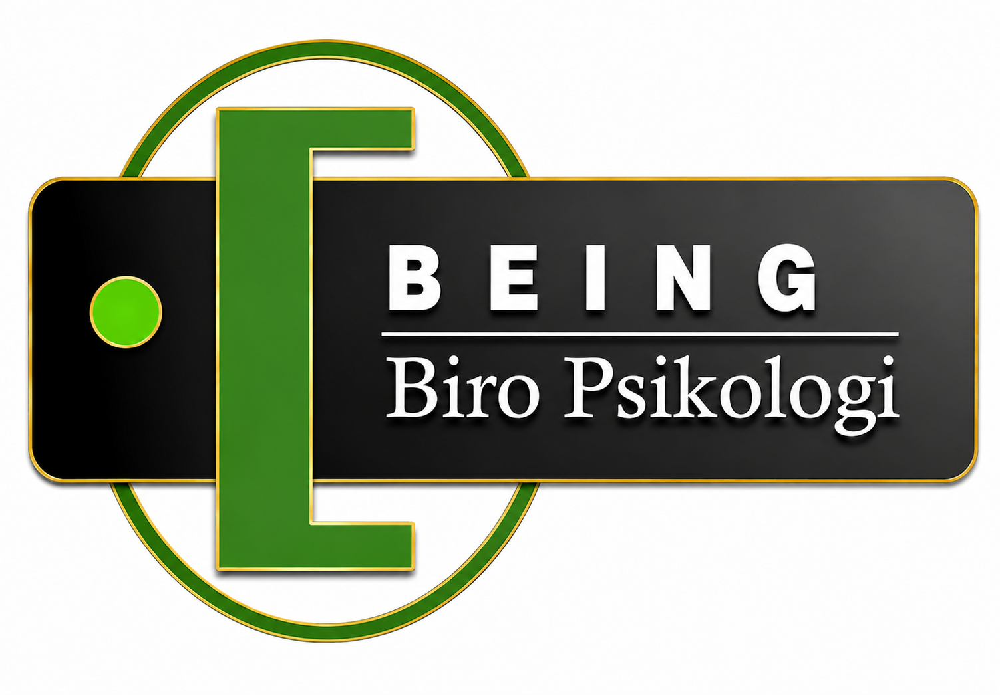

HUMAN DEVELOPMENT SERIESBelajar, bertumbuh, dan memberdayakan.
Portal pembelajaran BEING untuk program pengembangan kapasitas individu, profesional, fasilitator, konselor, penggerak masyarakat, dan organisasi.

HUMAN DEVELOPMENT SERIESPortal pembelajaran BEING untuk program pengembangan kapasitas individu, profesional, fasilitator, konselor, penggerak masyarakat, dan organisasi.